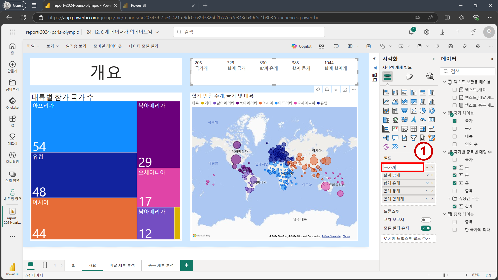

STEP 05: 데이터 시각화 part2#
이번 실습에서는 개요 페이지를 구축해보겠습니다.
5.1 카드 시각적 개체 추가하기#
먼저
개요버튼을 클릭하여개요페이지로 이동합니다. 그리고 아래 이미지의 2번을 참고하여 카드 시각적 개체를 클릭하여 보고서에 추가합니다. 해당 카드 시각적 개체의필드란에는'텍스트 보관용 테이블'[텍스트_개요]필드를 드래그 앤 드롭하여 추가합니다.카드 시각적 개체에
개요라는 텍스트가 좌우 가운데 정렬 및 위아래 가운데 정렬되어 있습니다. 하지만개요텍스트 하단에텍스트_개요라는 부가적인 문구가 나타납니다. 해당 문구를 지워주기 위해 서식(아래 이미지에서 1번) 메뉴로 이동한 후시각적 개체>범주 레이블기능을 클릭하여 해제 합니다. 해제가 되면 초록색이었던 버튼 색이 하얀색으로 바뀝니다.개요카드 시각적 개체 사이즈를 적절하게 조절하여 보고서 캔버스 좌측 상단에 배치합니다.
5.2 트리맵 추가하기#
비어 있는 캔버스를 클릭합니다. 해당 과정을 통해 앞서 만들었던 카드 시각적 개체가 선택되지 않도록 합니다. 아래 이미지에 있는 2번을 참고하여 트리맵 시각적 개체를 클릭합니다. 트리맵 시각적 개체가 캔버스에 추가되면 사이즈를 적절하게 조정한 후, 트리맵을 클릭하고 드래그 하여 적절한 위치에 배치합니다.
'국가 테이블'[대륙]필드를 드래그하여 트리맵의범주로,'국가 테이블'[국가]필드를 드래그하여 트리맵의값으로 추가합니다.현재 트리맵에 대륙명만 나오고 있습니다. 해당 대륙에 속한 국가들의 개수 또한 표시하기 위해 아래 이미지를 참고하여
데이터 레이블기능을 활성화 합니다.
Tip
트리맵 타일에 마우스를 올리면 대륙별 국가 개수를 확인할 수는 있습니다.
데이터 레이블기능을 활성화 하여 대륙별 올림픽에 참가한 국가의 개수는 트리맵에 표시가 되고 있습니다. 허나 사이즈가 너무 작습니다. 폰트 사이즈를 조절하기 위해데이터 레이블버튼을 클릭한 후 폰트 사이즈를35로 업데이트 합니다.대륙 이름 또한 너무 작기 때문에 사이즈를 편집하겠습니다.
범주 레이블버튼을 클릭한 후 폰트 사이즈를15로 업데이트 합니다.트리맵의 제목을 편집하기 위해 아래 이미지를 참고하여
제목메뉴로 이동합니다. 그리고 텍스트를대륙별 참가 국가 수로 편집합니다. 폰트 사이즈는20으로 설정합니다.
5.3 맵 추가하기#
새로운 시각적 개체를 추가하기 위해 비어 있는 캔버스 공간을 클릭합니다. 그리고 아래 이미지를 참고하여 맵 시각적 개체 버튼을 클릭합니다.
맵 시각적 개체의 사이즈를 적절히 조절한 후 캔버스 내에 배치합니다. 또한, 우측에 있는 필터 패널은 이번 워크샵에서는 사용하지 않기 때문에
>>버튼을 눌러 접어줍니다. 이렇게 하면 캔버스의 화면이 상대적으로 커지게 되어 보고서 구축 작업이 수월해집니다.아래 이미지를 참고하여
국가 테이블에 있는 필드들을 맵 시각적 개체에 적절한 위치에 추가해줍니다.거품 크기에 추가된인원 수필드가 제대로 집계가 안되고 있습니다. 맵 시각적 개체를 보면 국가별 거품의 크기가 동일하게 나오고 있습니다. 그렇기 때문에 편집을 진행하겠습니다.거프 크기에 있는인원 수개필드를 클릭한 후 팝업창이 뜨면합계버튼을 클릭합니다.맵 시각적 개체에 있는 거품들을 보면 이제 국가별로 거품 크기가 다른 것을 확인할 수 있습니다. 거품에 마우스를 올려 국가별 올림픽에 참가한 인원 수를 확인해 봅니다. 맵 시각적 개체에 마우스를 올려 스크롤을 움직이면서 맵을 확대하거나 축소할 수도 있습니다. 아래 그림처럼 한눈에 유럽에 비해 아프리카 국가들은 국가별 참가 인원 수가 상대적으로 적은 것을 확인할 수 있습니다.
5.4 여러 행 카드 추가하기#
새로운 시각적 개체를 추가하기 위해 비어 있는 캔버스를 클릭합니다. 그리고 나서 아래 이미지의 2번을 참고하여 여러 행 카드 시각적 개체를 추가합니다.
아래 이미지를 참고하여 여러 행 카드에 적절한 필드들을 추가합니다.
'국가 테이블'[국가]필드가 제대로 집계가 되지 않고 있기 때문에, 클릭하여개수(고유)로 집계 방법을 업데이트 해줍니다.여러 행 카드 시각적 개체에
국가개부분에 206이 집계된 것을 확인할 수 있습니다. 2024 파리 올림픽에 참가한 국가 및 단체 수가 총 206개라는 뜻입니다. 시각적 개체들의 좌우 크기를 적절하게 조절하여 여러 행 카드 시각적 개체에서 5개의 카드들이 아래 이미지 처럼 하나의 행에 모두 나오게끔 합니다.여러 행 카드 시각적 개체에 표시되는 필드명을 편집해주기 위해
필드에 있는 각각의 필드명을 더블 클릭하여 편집 화면을 활성화 시킵니다. 그리고 각각 아래와 같은 필드명으로 업데이트 합니다.국가개->참가국 수합계 금개->금메달 합계합계 은개->은메달 합계합계 동개->동메달 합계합계 합계개->메달 총계
여러 행 카드의 서식을 편집해주기 위해 아래 이미지를 참고하여
설명 값의 폰트 크기와범주 레이블의 폰트 크기를 업데이트 합니다.설명 값은 폰트 크기를23으로,범주 레이블은 폰트 크기를 14로 업데이트 합니다.
여러 행 카드 시각적 개체에 있는
메달 총계부분에는1044숫자가 입력되어 있습니다. 2024 파리 올림픽 행사에서 수여된 메달의 총 합계가 1044개라는 뜻입니다. 해당 숫자에는 천 단위 기준으로 쉼표(,)가 입력되어 있으면 해석하기 더 용이할 것입니다. 천 단위 기준 쉼표를 넣어주기 위해 아래 이미지를 참고하여데이터 서식의설정 적용 대상을메달 총계로 선택합니다.그리고 나서
형식 옵션의서식부분을정수로 선택합니다.최종적으로
천단위 구분 기호버튼을 클릭해서 하얀색이었던 버튼을 초록색으로 활성화 시키면1044숫자가1,044으로 업데이트 되는 것을 확인하실 수 있습니다.이제 개요 페이지가 완성되었습니다. Power BI에서 구축한 시각적 개체 간에는 기본값으로 상호 작용이 활성화 되어 있습니다. 트리맵에서
아시아를 클릭하면 맵에서 아시아 국가만 강조 표시되는 것을 확인하실 수 있습니다. 그와 동시에 여러 행 카드에는 아시아 국가들의 메달 합계만 집계되어 나타나는 것을 확인하실 수 있습니다. 맵 상에 있는 거품에 마우스를 올리면 해당 국가에서 올림픽에 참가한 인원 수 또한 확인이 가능합니다. 다음으로는 메달 세부 분석 페이지를 구축할 것입니다. 우선개요카드 시각적 개체를 클릭한뒤 복사(Ctrl + C)를 합니다.
축하합니다. 데이터 시각화 두번째 파트를 모두 완료하셨습니다.